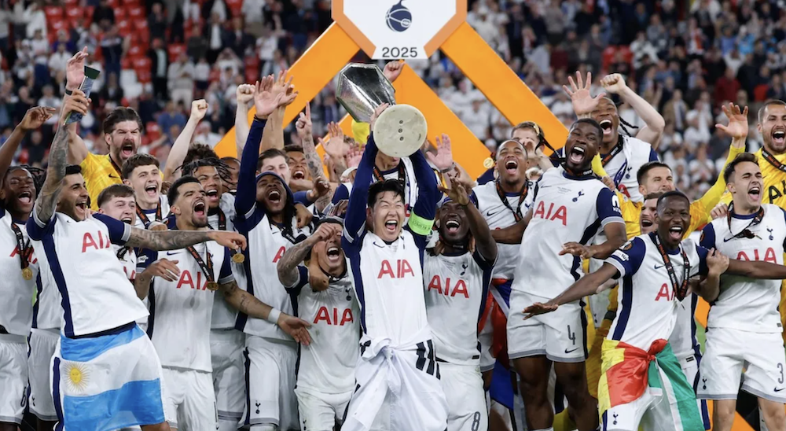

This page says a bit more about me.
When I am not studying, I like to watch soccer and listen to music.
My favorite soccer team is Tottenham Hotspur. I've been supporting them since 2017.
I was very happy when we won the Europa League in 2025.

I like to listen to music. These days, I like listening to classical music. This table lists some of my favorite works:
| Title | Composer |
|---|---|
| Symphony No. 2 | Sergei Rachmaninoff |
| Symphony No. 4 | Johannes Brahms |
| Piano Concerto No. 3 (Listen to this recording!) | Sergei Rachmaninoff |
| Ballade No. 4 | Frédéric Chopin |
I also like to play instruments. Here are some of the instruments I play: